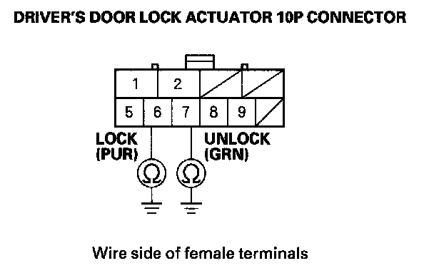

B2181
DTC B2181: Driver's Door LOCK Knob Switch LOCK/UNLOCK Signal ErrorNOTE: If you are troubleshooting multiple DTCs, be sure to follow the instructions in B-CAN System Diagnosis Test Mode A.
1. Clear the DTCs with the HDS.
2. Turn the ignition switch OFF, and then back ON (II).
3. Lock and unlock the driver's door with the door lock knob switch operation.
4. Check for DTCs with the HDS.
Is DTC B2181 indicated?
YES - Go to step 5.
NO - Intermittent failure, the driver's door lock knob switch system is OK at this time. Check for loose or poor connections.
5. Select DOOR LOCK from the BODY ELECTRICAL system select menu, and enter the DATA LIST.
6. Check the ON/OFF information of the Driver's Door Lock Knob Switch (LOCK) and Driver's Door Lock Knob Switch (UNLOCK) in the DATA LIST.
Does the Driver's Door Lock Knob Switch (LOCK) information indicate ON and Driver's Door Lock Knob Switch (UNLOCK) information indicate OFF with the door lock knob switch is in the LOCK position, and does the Driver's Door Lock Knob Switch (LOCK) information indicate OFF and Driver's Door Lock Knob Switch (UNLOCK) information indicate ON with the door lock knob switch is in the UNLOCK position?
YES - Replace the driver's MPCS unit.
NO - Go to step 7.
7. Disconnect the driver's door lock actuator 10P connector.
8. Check the ON/OFF information of the Driver's Door Knob Switch (LOCK) and Driver's Door Lock Knob Switch (UNLOCK) in the DATA LIST.
Are both information indicators OFF?
YES - Faulty driver's door lock knob switch; replace the driver's door lock actuator assembly.
NO - Go to step 9.
9. Turn the ignition switch OFF.
10. Disconnect the driver's MPCS unit connector A (40P).

11. Check for continuity between body ground and the driver's door lock actuator 10P connector terminals No. 6 and No. 7 individually.
Is there continuity?
YES - Repair a short to ground in the wire.
NO - Replace the driver's MPCS unit.